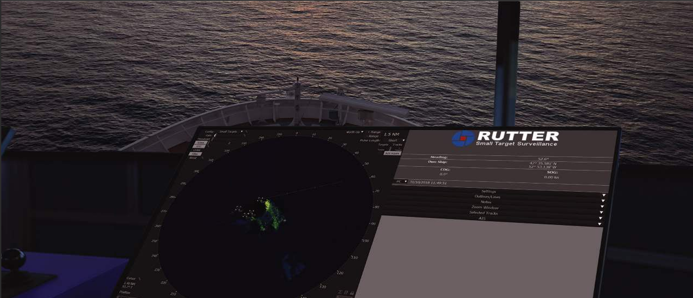

Enhanced Target Visibility
Advanced algorithms process radar returns to improve target definition in rough seas, darkness, precipitation, and other challenging maritime conditions.
Engineered to detect, track, and monitor fast or slow moving, low-signature, and variably sized targets with high detection probability and low false alarm performance.
Advanced algorithms process radar returns to improve target definition in rough seas, darkness, precipitation, and other challenging maritime conditions.
Increases security by detecting and tracking dark targets that are not broadcasting AIS and assists teams searching for people or objects across varying sea states.
Seamlessly and passively integrates with existing radar systems, including support for dual-radar switching and coastline-aware filtering near land.

Detect and track low-signature targets in real time with confidence.
Small Target Surveillance continuously detects, tracks, and monitors fast or slow moving targets while updating position, speed, and course in real time for a clear operational picture.
It is optimized for difficult operating environments and supports configurable geo-fixed and vessel-fixed alert zones to match mission requirements and operational procedures.
Built to work with existing infrastructure, the system minimizes deployment friction while delivering stronger maritime domain awareness for both routine and high-risk operations.

Use this section for small-target detection demos, tracking behavior, and operations workflow explainers.
Optimized to function in demanding maritime environments:
All sigma S6 products can be combined on one IEC 60945 Radar Data Processor, allowing teams to scale capability without adding separate processing platforms.
Configure geo-fixed or vessel-fixed alert zones to match patrol routes, restricted areas, or mission-specific perimeter monitoring requirements.
The Rutter radar switch allows users to switch between two radars, giving operators flexibility for changing ranges, sectors, and operational contexts.
Incorporates a world coastline map to reduce false positive targets when operating near land and in clutter-prone nearshore environments.